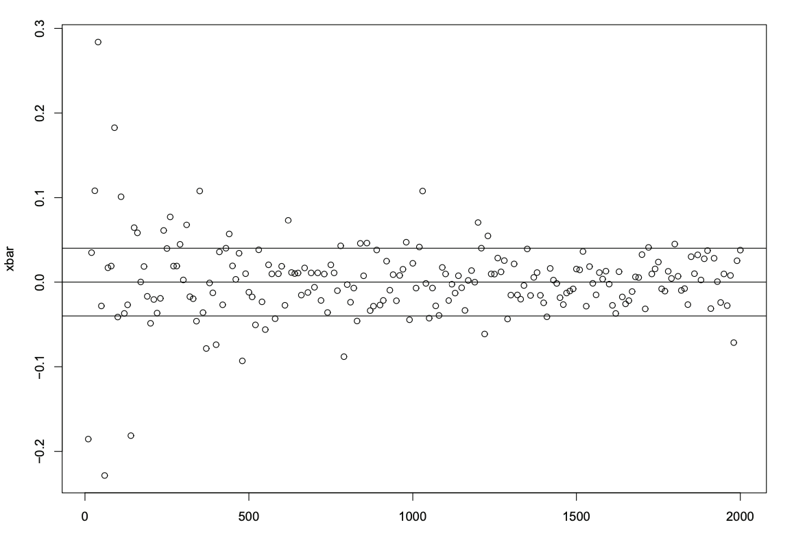
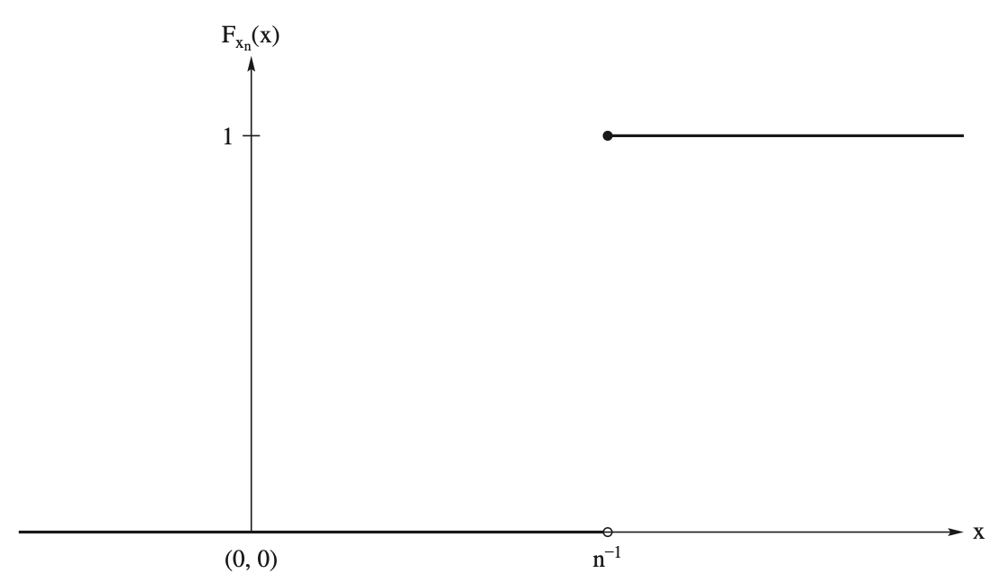
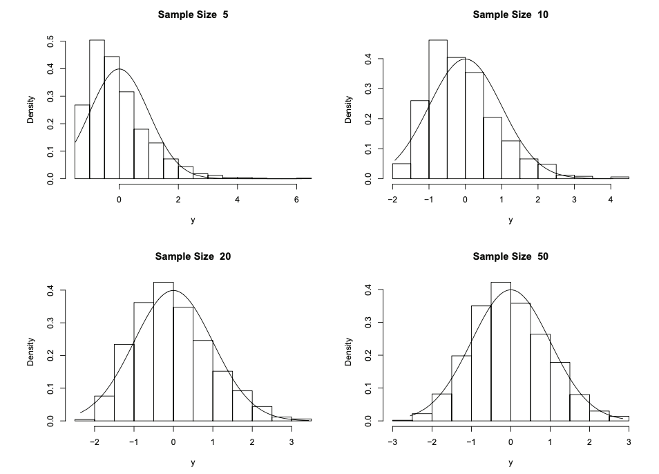

5 一致性與極限分配
本章以 HMC8 Chapter 5 為編號依據。先快速回顧 random sample、statistic 與 estimator，再深入兩種收斂、Slutsky-type 性質與 Delta method，最後以 CLT 和 multivariate extensions 銜接漸近推論。
\[ \boxed{\text{Recall}\longrightarrow\text{Deepen}\longrightarrow\text{Connect}} \]
本講義由蘇南誠老師編授。感謝黃怡婷老師提供原始數理統計講義檔案；本章保留原有英文術語與公式，並整理為可連續閱讀的教學形式。
學習目標
完成本章後，學生應能：
- 區分機率收斂與分配收斂
- 判斷序列是否有界於機率
- 使用 Slutsky 定理與 Delta method
- 運用動差生成函數推導極限分配
- 以中央極限定理建立近似推論
必備的先備知識
期望、變異數、動差生成函數及基本微積分。
以下依原講義順序整理核心定義、定理、公式與例題。
Stage 1 — Recall：樣本、統計量與估計量
Random sample
Consider the sample observations that have the same distribution as \(X\).
Denote them as the random variables \(X_1, X_2, \ldots, X_n\), where \(n\) denotes the sample size.
Use lower case letters \(x_1, x_2, \ldots, x_n\) as the values or realizations of the sample.
Assume the sample observations \(X_1, X_2, \ldots, X_n\) are mutually independent.
It is called the random sample.
Statistics
定義 5.1
Let \(X_1, X_2, \ldots, X_n\) denote a sample on a random variable \(X\).
Let \(T= T(X_1, X_2, \ldots, X_n)\) be a function of the sample.
Then \(T\) is called a statistic.
Pivot random variable
The pivot is usually a function of an estimator of \(\theta\) .
The distribution of the pivot is known.
For example,
Suppose \(X_1, X_2, \ldots , X_n\) is a random sample on a random variable \(X\) which has a \(N(\mu,\sigma^2)\) distribution.
Denote the sample mean by \(\bar{X}_n = n^{-1}\sum_{i=1}^n X_i\).
Then the pivot random variable of interest is \[Z_n= \frac{\bar{X}_n - \mu}{\sigma/\sqrt{n}} \sim N(0, 1).\]
Stage 2 — Deepen：機率收斂與分配收斂
5.1 Convergence in Probability
Convergence in probability
定義 5.2
Let \(\{X_n\}\) be a sequence of random variables.
Let \(X\) be a random variable defined on a sample space.
\(X_n\) converges in probability to \(X\) if, for all \(\epsilon>0\), \[\lim_{n\rightarrow \infty} [|X_n - X|\ge \epsilon] = 0,\] or \[\lim_{n\rightarrow \infty} [|X_n - X| < \epsilon] = 1,\]
Write \(X_n \stackrel{P}{\rightarrow} X\)
Weak Law of Large Numbers
定理 5.1
Let \(\{X_n\}\) be a sequence of iid random variables having common mean \(\mu\) and variance \(\sigma^2<\infty\).
Let \(\bar{X}_n = n^{-1}\sum_{i=1}^n X_i\).
Then \(\bar{X}_n \stackrel{P}{\rightarrow} \mu\)
Additive properties
定理 5.2
Suppose \(X_n \stackrel{P}{\rightarrow} X\) and \(Y_n \stackrel{P}{\rightarrow} Y\).
Then \({X}_n + Y_n \stackrel{P}{\rightarrow} X + Y\)
Constant
定理 5.3
Suppose \(X_n \stackrel{P}{\rightarrow} X\) and \(a\) is a constant.
Then \(a{X}_n \stackrel{P}{\rightarrow} aX\)
Continuity
定理 5.4
Suppose \(X_n \stackrel{P}{\rightarrow} a\) and the real function \(g\) is continuous at \(a\).
Then \(g({X}_n) \stackrel{P}{\rightarrow} g(a)\).
Multiplicative properties
定理 5.5
Suppose \(X_n \stackrel{P}{\rightarrow} X\) and \(Y_n \stackrel{P}{\rightarrow} Y\).
Then \({X}_n Y_n \stackrel{P}{\rightarrow} X Y\).
Estimator and Estimate
Let \(X_1, X_2, \ldots, X_n\) denote a random sample on a random variable \(X\) with a density or mass function of the form \(f(x; \theta)\) or \(p(x; \theta)\), where \(\theta\in\Omega\) for a specified set \(\Omega\).
Consider a statistic \(T\), which is an estimator of \(\theta\).
\(T\) is formally called a point estimator of \(\theta\).
Call its realization \(t\) an estimate of \(\theta\).
Estimator
Let \(X_1, X_2, \ldots, X_n\) denote a sample on a random variable \(X\) with pdf \(f(x; \theta)\), \(\theta\in\Omega\).
Let \(T= T(X_1, X_2, \ldots, X_n)\) be a statistic.
Suppose \(T\) is a point estimator of \(\theta\).
Estimate
When the sample is drawn, let \(x_1, x_2, \ldots , x_n\) denote the observed values of \(X_1, X_2, \ldots, X_n\).
We call these values the realized values of the sample.
Call the realized statistic \(t = t(x_1, x_2, \ldots , x_n)\) a point estimate of \(\theta\).
Properties of estimators
Unbiasedness
- \(T\) is an unbiased estimator of \(\theta\) if \(E(T) = \theta\).
Consistency
Consistent estimator
定義 5.3
Let \(X\) be a random variable with cdf \(F(x,\theta)\), \(\theta \in \Omega\).
Let \(X_1, X_2, \ldots, X_n\) be a sample from the distribution of \(X\).
Let \(T_n\) denote a statistic.
We say \(T_n\) is a consistent estimator of \(\theta\) if \[T_n \stackrel{P}{\rightarrow} \theta.\]
Example 1 — Realizations of \(\bar{X}\) from \(N(0,1)\)

Example 2
Let \(X_1, X_2, \ldots, X_n\) be a sample from a distribution with mean \(\mu\) and variance \(\sigma^2\).
Assume that \(E[X_1^4]<\infty\).
Show the sample variance is a consistent estimator of \(\sigma^2\).
Example 3
Let \(X_1, X_2, \ldots, X_n\) be a sample from a uniform (0,\(\theta)\) distribution.
Assume \(\theta\) is unknown.
Let \(Y_n = \max(X_1, X_2, \ldots, X_n)\).
Show \(Y_n\) is a consistent estimator of \(\theta\).
5.2 Convergence in Distribution
Convergence in distribution
定義 5.4
Let \(\{X_n\}\) be a sequence of random variables with distribution fuctions \(F_{X_n}\).
Let \(X\) be a random variable with cdf \(F(x,\theta)\), \(\theta \in \Omega\).
Let \(C(F_X)\) denote the set of all points where \(F_X\) is continuous.
We say \(X_n\) converges in distribution to \(X\) if \[\lim_{n\rightarrow \infty} F_{X_n}(x) = F_X(x), \forall x\in C(F_X).\]
Denote \(X_n \stackrel{D}{\rightarrow} X\).
Remark
This material on convergence in probability and in distribution comes under what statisticians refer to as asymptotic theory.
We say that the distribution of \(X\) is the asymptotic distribution or the limiting distribution of the sequence \(\{X_n\}\).
Instead of saying \(X_n \stackrel{D}{\rightarrow} X\), where \(X\) has a standard normal distribution, we may write \(X_n \stackrel{D}{\rightarrow} N(0,1)\).
Remark – Points of continuity

Remark – Convergence in probability and in distribution
Convergence in probability is a way of saying that a sequence of random variables \(X_n\) is getting close to another random variable \(X\).
Convergence in distribution is only concerned with the cdfs \(F_{X_n}\) and \(F_X\).
Example 4
Let \(X\) be a continuous random variable with a pdf \(f_X(x)\) that is symmetric about 0; i.e., \(f_X(-x) = f_X(x)\).
Then \(-X\) also has a density function \(f_X(x)\).
\(X\) and \(-X\) have the sample distributions.
Define the sequence of random variables \(X_n\) as \[X_n = \left\{\begin{array}{ll} X & \text{if }n\text{ is odd}\\ -X & \text{if }n\text{ is even}\\ \end{array}\right .\]
\(F_{X_n} (x) = F_X(x)\) for all \(x\) in the support of \(X\), so that \(X_n \stackrel{D}{\rightarrow} X\).
\(X_n\) does not get close to \(X\). In particular, \(X_n \nrightarrow X\) in probability.
Example 5
Let \(\bar{X}_n\) have the cdf \[F_n(\bar{x}) = \int_{-\infty}^{\bar{x}} \frac{1}{\sqrt{1/n}\sqrt{2\pi}} e^{-nw^2/2}dw.\]
Let \(X\) have the cdf \[F(\bar{x}) = \left\{\begin{array}{ll} 0 & \text{if }\bar{x}<0\\ 1 & \text{if }\bar{x}\ge 0 \end{array} \right .\]
Show \(\bar{X}_n \stackrel{D}{\rightarrow} X\).
Example 6
Let \(\bar{X}_n\) have the cdf \[F_n(\bar{x}) = \int_{-\infty}^{\bar{x}} \frac{1}{\sqrt{1/n}\sqrt{2\pi}} e^{-nw^2/2}dw.\]
Let \(X\) have the cdf \[F(\bar{x}) = \left\{\begin{array}{ll} 0 & \text{if }\bar{x}<0\\ 1 & \text{if }\bar{x}\ge 0 \end{array} \right .\]
Show \(\bar{X}_n \stackrel{D}{\rightarrow} X\).
Example 7
Let \(\bar{X}_n\) have the pmf \[p_n(x) = \left \{ \begin{array}{ll} 1 & x = 2 + n^{-1}\\ 0 & \text{elsewhere} \end{array} \right .\]
Let \(X\) have the cdf \[F(x) = \left\{\begin{array}{ll} 0 & \text{if }x<2\\ 1 & \text{if }x\ge 2 \end{array} \right .\]
Show \(\bar{X}_n \stackrel{D}{\rightarrow} X\).
Example 8
Let \(T_n\) have a \(t\)-distribution with \(n\) degrees of freedom, \(n = 1, 2, 3, \ldots.\)
Its cdf is \[F_n(x) = \int_{-\infty}^{t} \frac{\Gamma((n+1)/2)}{\sqrt{\pi n}\Gamma(n/2)} \frac{1}{(1 + y^2/n)^{(n+1)/2}} dy.\]
Show \(T_n \stackrel{D}{\rightarrow} N(0, 1)\).
Remark – Stirling’s formula
- In advanced calculus the following approximation is derived: \[\Gamma(k+1) \approx \sqrt{2\pi} j^{k+1/2} e^{-k}.\]
Example 9
Let \(X_1, X_2, \ldots, X_n\) be a sample from a uniform (0,\(\theta)\) distribution.
Assume \(\theta\) is unknown.
Let \(Y_n = \max(X_1, X_2, \ldots, X_n)\).
Show \(Z_n = n(\theta - Y_n)\) converges in distribution to an exponential distribution with mean \(\theta\).
Properties of convergences
定理 5.6
- If \(X_n \stackrel{P}{\rightarrow} X\), then \(X_n \stackrel{D}{\rightarrow} X\).
Properties of convergences
定理 5.7
- If \(X_n \stackrel{D}{\rightarrow} b\), then \(X_n \stackrel{p}{\rightarrow} b\).
Properties of convergences
定理 5.8
- If \(X_n \stackrel{D}{\rightarrow} X\) and \(X_n \stackrel{P}{\rightarrow} 0\), then \(X_n + Y_n\stackrel{D}{\rightarrow} X\).
Properties of convergences
定理 5.9
- If \(X_n \stackrel{D}{\rightarrow} X\) and \(g\) is a continuous function on the support of \(X\), then \(g(X_n) \stackrel{D}{\rightarrow} g(X)\).
Properties of convergences
定理 5.10
- If \(X_n \stackrel{D}{\rightarrow} X\), \(A_n \stackrel{P}{\rightarrow} a\) and \(B_n \stackrel{P}{\rightarrow} b\), then \(A_n + B_n X_n \stackrel{D}{\rightarrow} a + bX\).
Bounded in probability
定義 5.5
- The sequence of random variables \(\{X_n\}\) is bounded in probability if, for all \(\epsilon > 0\), there exist a constant \(B_{\epsilon} > 0\) and an integer \(N_\epsilon\) such that \[n \ge N_\epsilon \Rightarrow P[|X_n|≤B_\epsilon] \ge 1 - \epsilon.\]
Properties
定理 5.11
Let \(\{X_n\}\) be a sequence of random variables.
Let \(X\) be a random variable.
If \(X_n \stackrel{D}{\rightarrow} X\), then \(X_n\) is bounded in probability.
Properties
定理 5.12
Let \(\{X_n\}\) be a sequence of random variables bounded in probability.
Let \(\{Y_n\}\) a sequence of random variables that converges to 0 in probability.
Then \(X_nY_n \stackrel{P}{\rightarrow} 0\).
Recall Young’s Theorem
Suppose \(g(x)\) is differentiable at \(x\).
Write \(g(y) = g(x) + g^{'}(x)(y - x) + o(|y - x|)\), where the notation \(o\) means \[a = o(b) \text{if and only if }\frac{a}{b} \rightarrow 0\text{,as }b\rightarrow 0\text{.}\]
Recall
Write \(o_p(X_n)\), which means \[Y_n =o_p(X_n)\Longleftrightarrow \frac{Y_n}{X_n} \stackrel{P}{\rightarrow} 0, \text{as }n\rightarrow \infty\text{.}\]
Write \(O_p(X_n)\), which means \[Y_n = O_p(X_n) \Longleftrightarrow \frac{Y_n}{X_n} \text{is bounded in probability, as }n\rightarrow \infty\text{.}\]
Properties
定理 5.13
Let \(\{Y_n\}\) be a sequence of random variables bounded in probability.
Suppose \(X_n = o_p(Y_n)\).
Then \(X_n \stackrel{P}{\rightarrow} 0\), as \(n\rightarrow \infty\).
\(\Delta\) method
定理 5.14
Let \(\{X_n\}\) be a sequence of random variables such that \[\sqrt{n}(X_n - \theta) \stackrel{D}{\rightarrow} N(0, \sigma^2)\]
Suppose \(g(x)\) is differentiable at \(\theta\) and \(g^{'}(\theta) \ne 0\).
Then \[\sqrt{n} (g(X_n) - g(\theta)) \stackrel{D}{\rightarrow} N(0, \sigma^2 (g^{'}(\theta))^2).\]
Convergence in distribution
定理 5.15
Let \(\{X_n\}\) be a sequence of random variables with mgf \(M_{X_n}(t)\) that exists for \(-h < t < h\) for all \(n\).
Let \(X\) be a random variable with mgf \(M(t)\), which exists for \(|t| ≤ h_1 ≤ h\).
If \(\lim_{n\rightarrow\infty} M_{X_n}(t) = M(t)\) for \(|t|\le h_1\), then \(X_n \stackrel{D}{\rightarrow} X\).
Example 10
Let \(Y_n\) have a distribution that is \(b(n, p)\).
Suppose \(\mu = np\), \(\forall n\).
Show \(Y_n \stackrel{D}{\rightarrow} Poisson (\mu)\).
Example 11
Let \(Z_n \sim \chi_n^2\).
Let \(Y_n = \frac{Z_n - n}{\sqrt{2n}}\).
Show that \(Y_n \stackrel{D}{\rightarrow} N(0, 1)\).
Example 12 — \(\chi^2\) distribution
Let \(Z_n\sim \chi^2(n)\).
Show that \[Y_n = \frac{Z_n - n}{\sqrt{2n}} \stackrel{D}{\rightarrow} N(0,1).\]
Histogram plot of 1000 generated values

Example 13 — More \(\chi^2\) distribution
Let \(Z_n\sim \chi^2(n)\).
We have \[Y_n = \frac{Z_n - n}{\sqrt{2n}} \stackrel{D}{\rightarrow} N(0,1).\]
Show that \[W_n = \left(\frac{Z_n}{\sqrt{2}n}\right)^{1/2} \stackrel{D}{\rightarrow} N(0, 1).\]
Stage 3 — Connect：中央極限定理與漸近推論
5.3 Central Limit Theorem
Central limit theorem
定理 5.16
Let \(X_1, X_2, \ldots, X_n\) denote the observations of a random sample from a distribution that has mean \(\mu\) and positive variance \(\sigma^2\).
Show that \[Y_n = \frac{\sum_{i=1}^n X_i - n\mu}{\sqrt{n}\sigma} = \frac{\sqrt{n}(\bar{X}_n - \mu}{\sigma} \stackrel{D}{\rightarrow} N(0,1).\]
Example 14
Let \(X_1, X_2, \ldots, X_n\) denote the observations of a random sample from a distribution that has mean \(\mu\) and positive variance \(\sigma^2\), where \(\mu\) and \(\sigma^2\) are unknown.
Let \(\bar{X}\) and \(S\) denote the sample mean and sample standard deviation.
Show that \[\frac{\bar{X} - \mu}{S/\sqrt{n}} \stackrel{D}{\rightarrow} N(0,1).\]
Example 15 — Binomial distribution
Let \(X_1, X_2, \ldots, X_n\) denote the observations of a random sample from a Bernoulli distribution \(b(1,p)\).
Show that \[\frac{\sum_{i=1}^n X_i - np}{\sqrt{np(1-p)}} \stackrel{D}{\rightarrow} N(0,1).\]
Example 16 — Proportion
Let \(X_1, X_2, \ldots, X_n\) denote the observations of a random sample from a Bernoulli distribution \(b(1,p)\).
Show that \[\frac{\hat{p} - p}{\sqrt{\hat{p}(1-\hat{p})/n}} \stackrel{D}{\rightarrow} N(0,1).\]
5.4 Extensions to Multivariate Distributions
Recall
For a vector \(\boldsymbol{v} \in R^p\), recall the Euclidean norm of \(\boldsymbol{v}\) is defined to be \[\parallel \boldsymbol{v} \parallel = \sqrt{\sum_{i=1}^p v_i^2}\]
Properties - \(\forall \boldsymbol{v}, \boldsymbol{u} \in R^p\)
\(\parallel \boldsymbol{v} \parallel \ge 0\)
\(\parallel \boldsymbol{v} \parallel = 0\) \(\Longleftrightarrow\) \(\boldsymbol{v} = \boldsymbol{0}\)
\(a \in R\), \(\parallel a\boldsymbol{v} \parallel = |a|\parallel \boldsymbol{v} \parallel\)
\(\parallel \boldsymbol{v} + \boldsymbol{u} \parallel \le \parallel \boldsymbol{v} \parallel + \parallel \boldsymbol{u} \parallel\)
Recall
Consider a standard basis of \(R^P\) and denote as \(\boldsymbol{e}_1, \ldots, \boldsymbol{e}_p\), where all the components of \(\boldsymbol{e}_i\) are 0 except for the ith component, which is 1.
Write any vector \(\boldsymbol{v}^{'} = (v_1, \ldots, v_p)\) as \[\boldsymbol{v} = \sum_{i=1}^p v_i \boldsymbol{e}_i\]
Properties of vector
Let \(\boldsymbol{v}^{'} = (v_1, \ldots, v_p) \in R^p\).
Then \[|v_j| \le \parallel \boldsymbol{v} \parallel \le \sum_{i=1}^n |v_i|, \forall j = 1,\ldots,p.\]
Convergence in probability
定義 5.6
Let \(\{\boldsymbol{X}_n\}\) be a sequence of \(p\)-dimensional vectors.
Let \(\boldsymbol{X}\) be a \(p\)-dimensional vectors.
\(\{\boldsymbol{X}_n\}\) and \(\boldsymbol{X}\) are defined on the same sample space.
Then \(\boldsymbol{X}_n \stackrel{P}{\rightarrow} \boldsymbol{X}\) if \[\lim_{n\rightarrow\infty} P[\parallel \boldsymbol{X}_n - \boldsymbol{X} \parallel \ge \epsilon] = 0, \forall \epsilon > 0.\]
Convergence in probability
定理 5.17
Let \(\{\boldsymbol{X}_n\}\) be a sequence of \(p\)-dimensional vectors.
Let \(\boldsymbol{X}\) be a random vector, all defined on the same sample space.
Then \[\boldsymbol{X}_n \stackrel{P}{\rightarrow} \boldsymbol{X} \Longleftrightarrow X_{nj} \stackrel{P}{\rightarrow} X_j \forall j=1,...,p.\]
Example 17
Let \(\{\boldsymbol{X}_n\}\) be a sequence of iid random vectors with common mean vector \(\boldsymbol{\mu}\) and variance-covariance matrix \(\boldsymbol{\Sigma}\).
Denote the vector of means by \[\bar{\boldsymbol{X}}_n = \frac{1}{n} \sum_{i=1}^n \boldsymbol{X}_i\]
Show \(\bar{\boldsymbol{X}}_n \stackrel{P}{\rightarrow} \boldsymbol{\mu}\)
Example 18
Let \(\boldsymbol{X}_i = (X_{i1}, \ldots, X_{ip})^{'}\).
Define the sample variance-covariance matrix by \[\begin{aligned} S_{n, j}^2 = \frac{1}{n-1} \sum_{i=1}^n (X_{ij} - \bar{X}_j)^2, j = 1, 2, \ldots, p,\\ S_{n, jk} = \frac{1}{n-1} \sum_{i=1}^n (X_{ij} - \bar{X}_j)(X_{ik} - \bar{X}_k), j \ne k = 1, 2, \ldots, p,\\ \end{aligned}\]
Assume finite fourth moments.
Show \(\boldsymbol{S} \stackrel{P}{\rightarrow} \boldsymbol{\Sigma}\), where the p × p matrix \({\boldsymbol S}\) is the matrix with the jth diagonal entry \(S_{n, j}^2\) and \((j,k)\)th entry \(S_{n,jk}\).
Convergence in probability
定義 5.7
Let \(\{\boldsymbol{X}_n\}\) be a sequence of \(p\)-dimensional vectors.
Let \(\boldsymbol{X}\) be a \(p\)-dimensional vectors.
Let \(\boldsymbol{X}_n\) and \(\boldsymbol{X}\) have distribution functions \(F_n(\boldsymbol{x})\) and \(F(\boldsymbol{x})\).
Then \(\boldsymbol{X}_n \stackrel{D}{\rightarrow} \boldsymbol{X}\) if \[\lim_{n\rightarrow\infty} F_n(\boldsymbol{x}) = F(\boldsymbol{x}),\] for all points \({\boldsymbol x}\) at which \(F(\boldsymbol{x})\) is continuous.
Convergence in distribution
定理 5.18
Let \(\boldsymbol{X}_n \stackrel{P}{\rightarrow} \boldsymbol{X}\).
Let \(g(\boldsymbol{x})\) be a function that is continuous on the support of \(\boldsymbol{X}\).
Then \(g(\boldsymbol{X}_n)\) converges in distribution to \(g(X)\).
Then \[g(\boldsymbol{X}_n) \stackrel{D}{\rightarrow} g(\boldsymbol{X}).\]
Convergence in distribution
定理 5.19
Let \(\{\boldsymbol{X}_n\}\) be a sequence of \(p\)-dimensional vectors.
Let \(\boldsymbol{X}\) be a \(p\)-dimensional vectors.
Let \(\boldsymbol{X}_n\) and \(\boldsymbol{X}\) have distribution functions \(F_n(\boldsymbol{x})\) and \(F(\boldsymbol{x})\).
Let \(\boldsymbol{X}_n\) and \(\boldsymbol{X}\) have moment generating functions \(M_n(\boldsymbol{t})\) and \(M(\boldsymbol{t})\).
Then \(\boldsymbol{X}_n \stackrel{D}{\rightarrow} \boldsymbol{X}\) if for some \(h>0\), \[\lim_{n\rightarrow\infty} M_n(\boldsymbol{t}) = M(\boldsymbol{t}),\] for all \(\boldsymbol{t}\) such that \(\parallel t\parallel < h\).
Central Limit Theorem
定理 5.20
Let \(\{\boldsymbol{X}_n\}\) be a sequence of iid random vectors with common mean vector \(\boldsymbol{\mu}\) and variance-covariance matrix \(\boldsymbol{\Sigma}\), which is positive definite.
Assume that the common moment generating function \(M(\boldsymbol{t})\) exists in an open neighborhood of \(\boldsymbol{0}\).
Let \[\boldsymbol{Y}_n = \frac{1}{\sqrt{n}} \sum_{i=1}^n (\boldsymbol{X}_i - \boldsymbol{\mu}) = \sqrt{n}(\bar{\boldsymbol{X}}- \boldsymbol{\mu}).\]
Then \(\boldsymbol{X}_n \stackrel{D}{\rightarrow} N_p(\boldsymbol{0}, \boldsymbol{\Sigma})\).
Properties
定理 5.21
Let \(\{\boldsymbol{X}_n\}\) be a sequence of \(p\)-dimensional random vectors.
Suppose \(\boldsymbol{X}_n \stackrel{D}{\rightarrow} N_p(\boldsymbol{\mu}, \boldsymbol{\Sigma})\).
Let \(\boldsymbol{A}\) be an \(m\times p\) matrix of constants and \(\boldsymbol{b}\) be an \(m\)-dimensional vector of constants.
Then \(\boldsymbol{A}\boldsymbol{X}_n + \boldsymbol{b} \stackrel{D}{\rightarrow} N_p(\boldsymbol{A}\boldsymbol{\mu} + \boldsymbol{b}, \boldsymbol{A}\boldsymbol{\Sigma}\boldsymbol{A}^{'})\).
\(\Delta\) method
定理 5.22
Let \(\{\boldsymbol{X}_n\}\) be a sequence of \(p\)-dimensional random vectors.
Suppose \(\sqrt{n}(\boldsymbol{X}_n - \boldsymbol{\mu}_0) \stackrel{D}{\rightarrow} N_p(\boldsymbol{0}, \boldsymbol{\Sigma})\).
Let \(\boldsymbol{g}\) be a transformation \(\boldsymbol{g}(\boldsymbol{x}) = (g_1(\boldsymbol{x}), \ldots, g_1(\boldsymbol{x}))^{'}\) such that \(1\le k\le p\).
Assume the \(k\times p\) matrix of partial derivatives \[\boldsymbol{B} = \left[\frac{\partial g_i}{\partial \mu_j}\right], i = 1, 2, \ldots, k; j = 1, 2, \ldots, p,\] are continuous and do not vanish in a neighborhood of \(\boldsymbol{\mu}_0\).
Let \(\boldsymbol{B}_0 = \boldsymbol{B}\) at \(\boldsymbol{\mu}_0\).
Then \(\sqrt{n} (\boldsymbol{g}(\boldsymbol{X}_n) - \boldsymbol{g}(\boldsymbol{\mu}_0) \stackrel{D}{\rightarrow} N_k(\boldsymbol{0}, \boldsymbol{B}_0\boldsymbol{\Sigma}\boldsymbol{B}_0^{'})\).
本章摘要
本章說明統計程序在樣本量增加時的行為，並以收斂定理、CLT 與 Delta method 建立漸近近似。
常見錯誤
- 混淆不同收斂概念的方向與強弱
- 未檢查 Delta method 的可微條件
- 中央極限定理標準化錯誤
- 把大樣本近似當成有限樣本精確結果
章末練習
- 從本章選出三個關鍵定義，分別寫出數學形式、成立條件及一個例子。
- 選擇一個主要定理或方法，重做推導並標記每一步使用的假設。
- 從原講義例題挑選一題，完整寫出解題目標、方法選擇、計算與結果解釋。
- 設計一個會違反本章方法條件的反例，說明錯誤會出現在哪一步。
建議後續為本章補入：中文概念導讀、完整解答、課堂練習難度標記，以及與下一章的銜接說明。